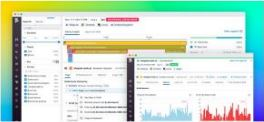

Thanks for downloading our Front-end Developer Kit!
The resources below are meant to serve as a toolkit to assist developers in better understanding user activity and troubleshooting front-end issues as efficiently as possible.
THIS KIT INCLUDES:
- 2 Best Practice Guides, , each detailing key methods to improve upon your existing front-end monitoring and testing strategies.
- A synthetic Monitoring x APM Solutions Brief, which describes how you can catch and resolve issues proactovely - before they have a chance to impact your customers.
- An On-Demand Webinar, so you can learn how to reduce MTTR for critical application issues with unified front-end and bac-end performance data.
 Want to troubleshoot front-end issues faster with Datadog?
Learn more about our Digital Monitoring Suite here
If you're ready to unify your front-end and back-end data in minutes, start a free trial, build one dashboard, and we'll send you a free DataDog t-shirt.
Visit dtdg.co/frontend for an on-demand demo of our Digital Experience Monitoring Suite.